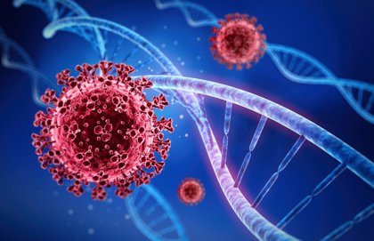
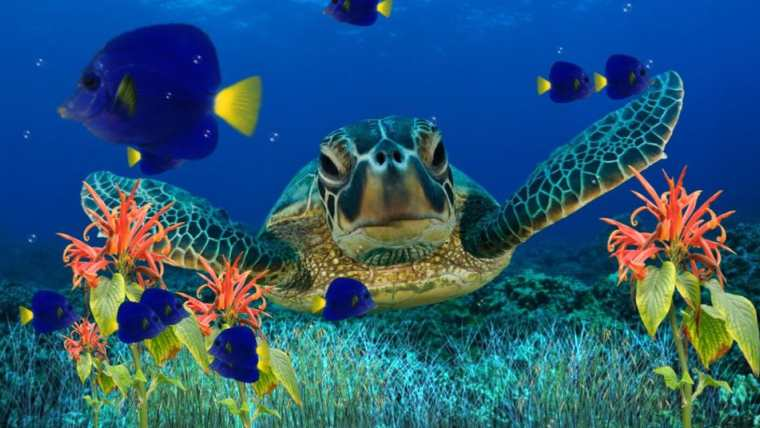
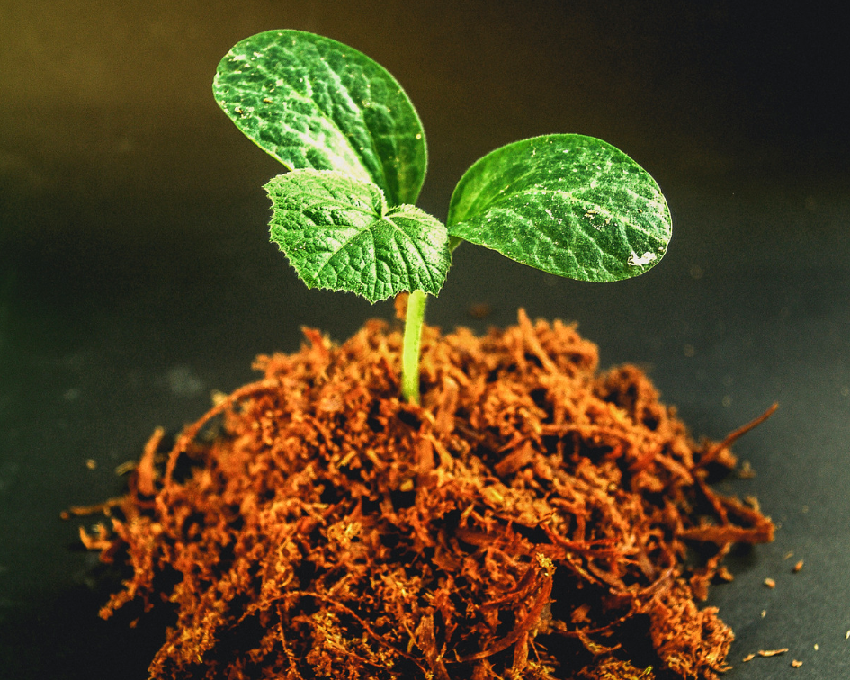
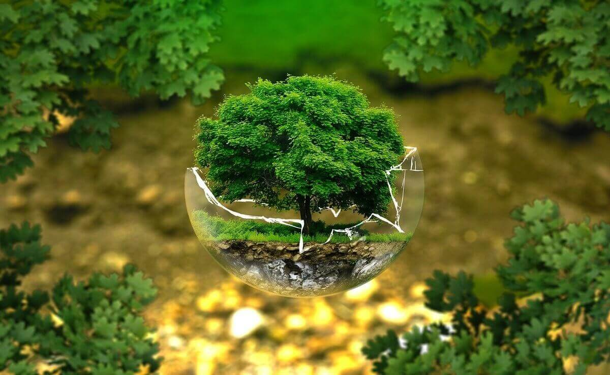
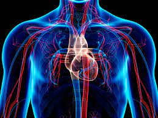
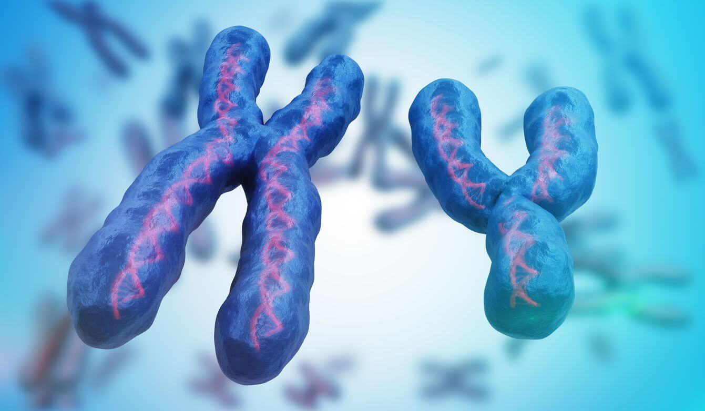
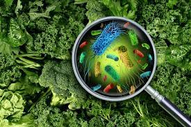
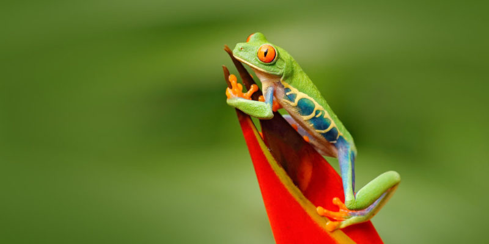

Es la ciencia natural que estudia todo lo relacionado con la vida lo organico y los procesos biologicos de los seres vivos en diversos campos especializados.La biologia se ocupa tanto de la descripcion de las caracteristicas y los comportamientos de los organismos individuales,como de las especies en su conjunto, asi como de la reproducion de los seres vivos y de las interacciones entre ellos y el entorno. De este modo, trata de estudiar la estructura y la dinamica funcional comunes a todos los seres vivos,con el fin de establecer las leyes generales que rigen la vida organica y losprincipios de esta.
La biologia se relaciona con otras especies como la geogradia,fisica,quimica,matematicas,ingenieria,o informatica. En general esta relacionada con las ciencias que le permiten comprender mejor su objeto de estudio, la vida como ya hemos visto la biologia se trata de una ciencia natural que engloban una serie de estudios desde las moleculas, hasta el estudio de comunidades de plantas y animales, estudiando incluso los virus. Por ejemplo en el caso de la geografia, al biologo le puede ser de gran ayuda a la hora de terminar la distribucion de las especies de organismos vivos en latitudes distintas del mundo, y como la localizacion incide en sus caracteristicas y funciones.
A la hora de hablar de fisica, los multiples avances en esta materia nos permiten conocer mejor la conservacion de la energia. incluso muchos de los descubrimientos de la fisica nos sirve para conocer mejor la estructura de la vida organica como el caso de la astrofisica y la biofisica. Si hacemos referencia a la quimica, gracias a este se conoce con mayor claridad en la descripcion de los procesos metabolicos como la respiracio, la digestion o la fotosintesis.
la escala de estudio va desde los subcomponentes biofisicos
hasta los sistemas complejos, los cuales componen los niveles
Los campos biologicos de la botanica,la zoologia y la medicina
surgieron desde los primeros momentos de la civilizacion,
mientras que la microbiologia fue introducida en el siglo XVII con
el descubrimiento del microscopio. Sin embargo, no fue hasta el
siglo XIX cuando la biologia se unifico, una vez que se
descubrieron coincidencias en todos los seres vivos y se
estudiaron como un conjunto. Algunos desarrollos clave en la
ciencia de la biologia fueron la genetica, la teoria de la evolucion
mediantes selecion naturas, la teoria microbiana de la
enfermedad y la aplicasion de tecnicas de fisica y quimica,
respectivamente.
Rama de la biologia que estudia la forma, funcion y comportamiento de las celulas. La biologia celular abarca tanto las celulas procariotas como las eucariotas y se puede dividir en muchos subtemas que puede incluir el estudio del metabolismo celular la comunicasion celular, la bioquimica y la compocision celular, organulos que contienen, su interaccion con el ambiente y su siclo vital.

Es la rama que analiza como es el desarrollo de los seres vivos desde que conciben hasta
que nacen, estudia los procesos mediante los cuales los organismos crecen y se desarrollan
la biologia del desarrollo actual estudia los controles geneticos del crecimiento,
celular, la diferencia celular y la morfogenesis (el proceso que originan los tegidos,organos,
y la anatomia).
Es la diciplina de la biologia que estudia los fenomenos biologicos en el medio marino, todo lo que se relacina con la vida marina de los ecosistemas marinos.Tambien se ocupa de la conservacion ambiental del mar y de los seres vivos que alli habitan, asi como de la descripsion, clasificasion biologica e investigacion cientifica de sus elementos por medio de diciplina auxiliares como la fisioquimica organica, siendo sus principales objetivos al mantenimiento integral de todas las especies marina, la adecuada gestion de los recursos naturales de sus habitats mediantes una previa planificasion para la conservacion y la implementacion de las medidas necesarias para erradicar o al menos reducir problemas devastadores como la contaminacion marina o la sobrepesca.

Estudia los procesos biologicos a nivel molecular o analizando la estructura, funcion y
composicion de las moleculas biologicamente importantes dentro de su funcion en los seres vivos. Por ejemplo estudia las sintesis de proteinas, la replicasion del ADN.
En su sentido moderno, la biologia molecular pretende explicar los fenomenos de la
vida a partir de sus propiedades macromoleculares. Dos macromoleculas en particular son
sus objeto de estudio:
Ciencia o rama de la biologia que estudia los vegetales, especialmente a nivel taxonomico estudia las plantas en sentido amplio, abarcando las categorias taxonomicas de las plantas sin flores (CRIPTOGAMAS), las plantas sin flores y sin vasos (BRIOFITAS), las plantas sin flores y con vasos (PTERIDOFITAS), las plantas con flores (ESPERMATOFITAS), dentro de la clasificasion clasica de los organismos vegetales. No obstante, en terminos historicos, el objeto de estudio de la botanica no se ah restringido estrictamente al reino plantae, sino que ah abarcado un grupo de organismos lejanamente emparentados entre si, esto es,las cianobacterias,los hongos,las algas y las plantas, los que casi no poseen ningun caracter en comun salvo la precesia de cloroplastos.
Rama de la biologia que estudia la relacion de los seres vivos y su abitad. en el ambiente se incluyen las propiedades fisicas y quimicas que pueden ser descritas como la suma de factores abioticos locales, como el clima y la geologia y los demas organismos que comparten ese habitad (FACTORES BIOTICOS). los ecosistemas estan compuestos de parte que icteractuan dinamicamente entre ellas junto con los organismos, las comunidades que integran, y tambien los componentes no vivos de su entorno. Los procesos del ecosistema, como la produccion primaria la pedogenesis,el siclo de nutrientes, y las diversas actividades de construccion del habita, regulan el flujo de energia y materia a travez de un entorno.
Estudia las funciones de los seres vivos como son las funciones respiratorias, de sirculacion sanguinea, sistema nervioso. dentro de esta rama se encuentran subdivisiones: fisiologia vegetal. Historicamente, la fisiologia es uno de los cimientos sobre los cuales se han construido todas las ciencia biologicas y medicas. Recientemente, ha habido intensos debates sobre la vitalidad de la fisiologia como diciplina. Si la fisiologia es quizas menos visible hoy en dia que durante la edad de oro del siglo XIX, es en gran parte porque el campo ha dado lugar ah algunos dominios mas activos de la siencias biologicas y medicas, actuale, como la neurociencia, la endocrinologia y la inmunologia.
Ciencia que estudia los genes, se herencia,reparacion, exprecion. es el area de estudio de la biologia que busca comprender y explicar como se transmite la herencia biologica de generacion en generacion mediante el ADN. se trata de una de las areas fundamentales de la biologia moderna, abarcando en su interior un gran numero de diciplinas propias de interdiciplinarias que se relacionan directamente con la bioquimica y la biologia celular. El principal objeto de estudio de la genetica son los genes, formados por segmentos de ADN Y ARN,tras la transcripcion de ARN mensajero, ARN ribosomico y ARN de transferencia, los cuales se titentizan a partir de ADN. El ADN controlan la estructura y el funcionamiento de cada celula, tiene la capacidad de crear copias exactas de si mismo tras un proceso llamado replicacion.
Ciencia que estudia los microorganismos. Tambien conocidos como microbios se dedica a estudiar los organismos que solo son visibles a travez del microscopio, organismo priocariota y eucariotas simples. Son considerados microbios todos aquellos seres vivos microscopico, estos pueden estar constituidos por una sola celula(UNICELULARES), asi como pequeños agregados celulares formados por celulas equivalentes, estos pueden ser eucariotas (CELULAS QUE POSEEN EMBOLTURA NUCLEAR), tales como hongos y protistas; y procariotas Como las bacterias sin embargo la microbiologia tradicional se ha ocupado especialmente de los microorganismos patogenos entre bacterias,virus y hongos, dejando a otros microorganismos en manos de la parasitologia y otras categorias de la biologia.
Diciplina derivada de la biologia que estudia la vida animal. estudia los animales desde angulos muy diversos. los zoologos se dedican, por ejemplo, a la realiacion de descripsiones morfologicas y anatomicas de cada espcie. tambiem se dedica a estudia, describir y comprender el comportamiento de las especies dentro de su habitat y su distribucion en los diferentes territorios del planeta los zoologos abordan, ademas, la ecologia de las especies, los vinculos y relaciones que mantienen cada especie con el resto de los organismos que forman parte de su habitat.
